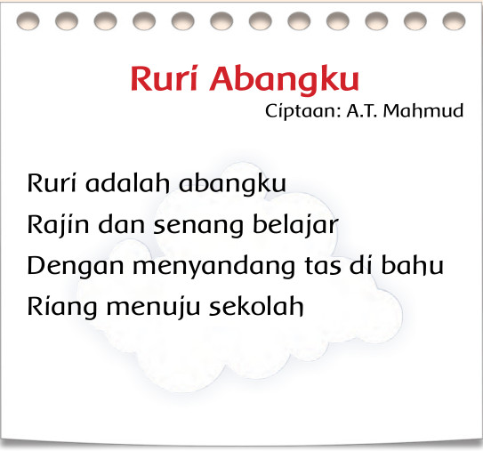
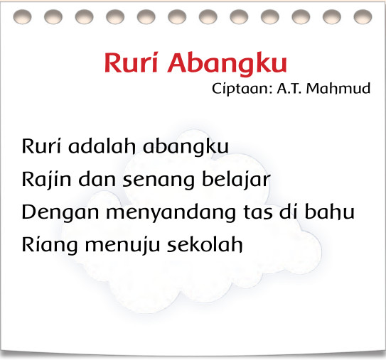

Aktivitas
Berikut ini adalah lagu tentang kakak dan adik.
Nyanyikan lagu ini sesuai dengan ketukan biramanya
dengan penuh percaya diri!

Bacalah syair lagu itu dengan nyaring!
Bacalah dengan cara menirukan gurumu dengan teliti!
Berikut ini adalah lagu tentang kakak dan adik.
Nyanyikan lagu ini sesuai dengan ketukan biramanya
dengan penuh percaya diri!

Bacalah syair lagu itu dengan nyaring!
Bacalah dengan cara menirukan gurumu dengan teliti!
Tahukah kamu arti abang?
Udin dan Mutiara selalu menjaga kerukunan.
Bagaimana mereka menjaga kerukunan?
Simaklah teks buku harian Udin berikut!
1 Juli 2013
Hari ini aku sedih karena
tindakanku menyebabkan buku
kakak sobek.
Aku tidak sengaja membuat buku
itu sobek.
Aku minta maaf kepada kakak.
Untunglah kakak memaafkan aku.